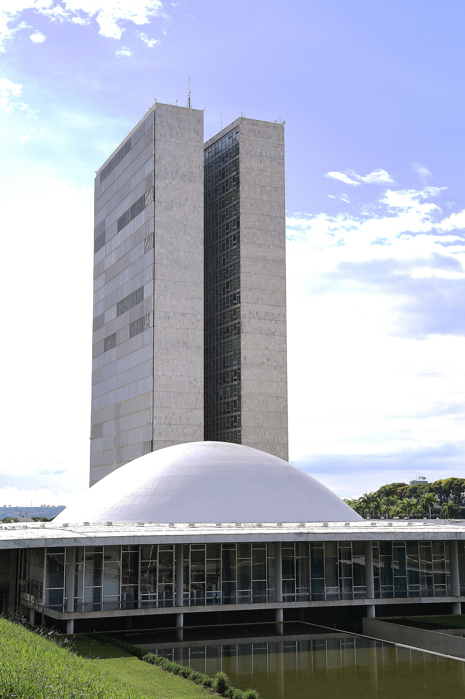
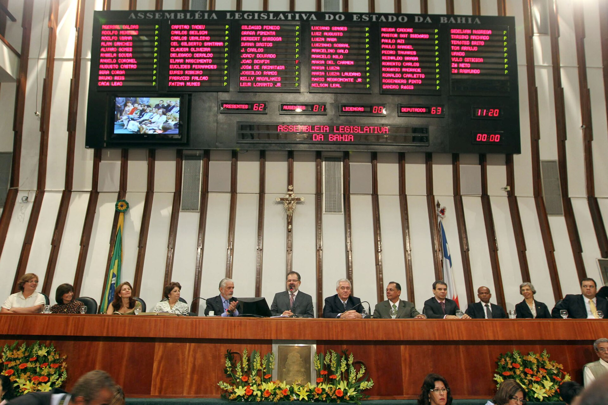
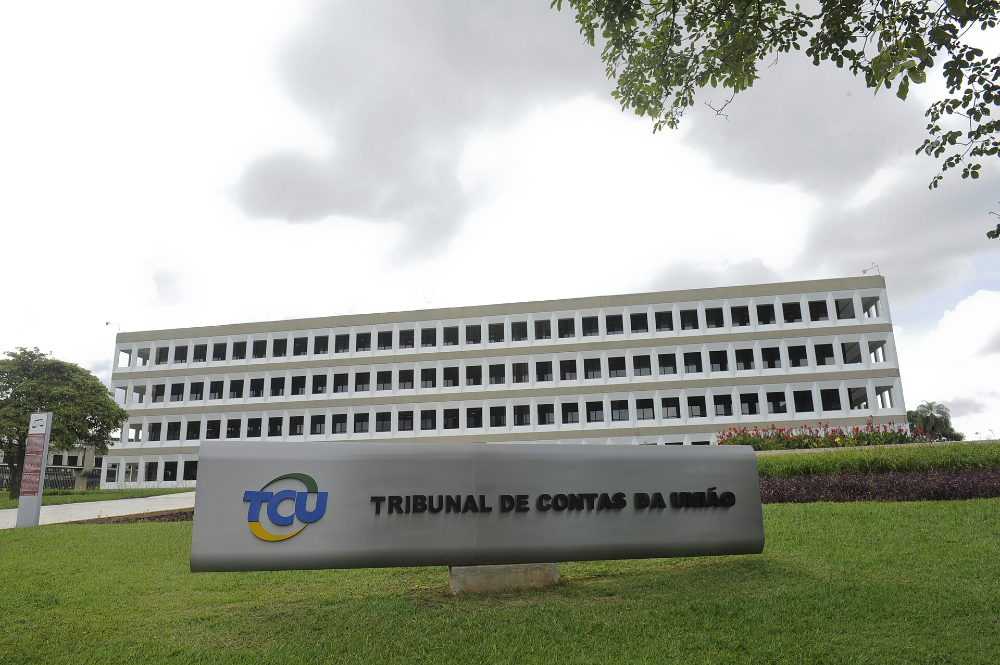
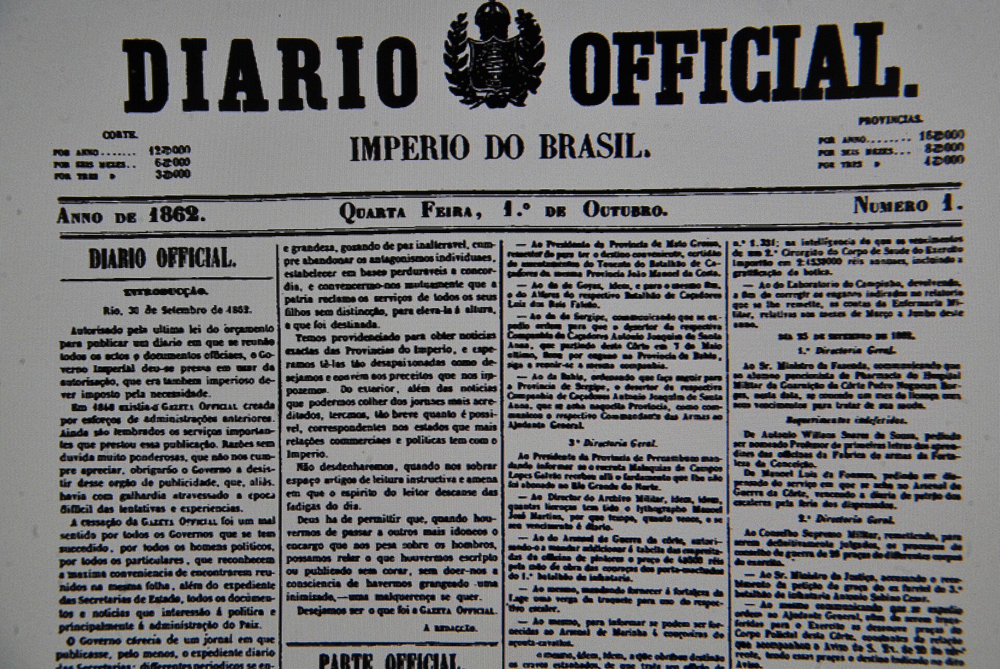

Doze temas, um para cada questão da prova de 04/12: o conceito, o detalhe que decide e uma questão para treinar.
Direito Constitucional — Organização dos Poderes · DIRBN.04 · Prof. Mario Bastos
Revisão · combinadosalvo 19:02
Antes de começar
Como é a prova de 04/12
Sexta, 04/12
On-line, no sistema da faculdade, das 19h às 22h. São 180 minutos.
12 objetivas
Cinco alternativas e uma só correta. Cada questão vale 0,5; a prova vale 6,0.
Cumulativa
Todos os módulos do semestre, com peso maior nos Módulos 4 a 7.
Regra de hoje: vocês respondem primeiro, discutimos depois, e só então aparece o gabarito. O Estudo Prévio do Poder Executivo vale 1,0 adicional na unidade, com teto de 10,0.
Desenho do conteúdoalvo 19:04
Plano de ensino · o que revisamos hoje · 1 de 2
Os itens do plano que a prova cobra
Item do plano
O que revisamos
Questão
Organização político-administrativa
As vedações comuns a todos os entes (art. 19)
1
Repartição de competências
A delegação da competência legislativa privativa da União
2
Estados, Municípios e Distrito Federal
A lei orgânica municipal: votação, quórum e promulgação
3
Poder Legislativo
O estatuto dos congressistas: imunidade formal e prisão
4
Desenho do conteúdoalvo 19:06
Plano de ensino · o que revisamos hoje · 2 de 2
Os itens do plano que a prova cobra
Item do plano
O que revisamos
Questão
Fiscalização contábil, financeira e orçamentária
Contas do Chefe do Executivo; atos e contratos ilegais
5 e 6
Processo legislativo
Limites ao poder de reforma; medida provisória
7 e 8
Poder Executivo
Crime de responsabilidade; posse, mandato e vacância
9 e 10
Poder Judiciário e funções essenciais à Justiça
Defensoria Pública; súmula vinculante e reclamação
11 e 12
Esquemaalvo 19:08
Esquema
Três eixos, doze temas
Federação e Legislativo
Fé pública · delegação de competência · lei orgânica · imunidade parlamentar
Os limites que a Constituição põe a cada ente e a cada Casa.
Controle e reforma
Contas · atos e contratos · limites da emenda · medida provisória
Quem fiscaliza o dinheiro e como a norma muda.
Executivo e Justiça
Impeachment · posse · Defensoria · súmula vinculante
Quem governa, quem responde e quem garante a decisão.
1 · Federação e fé públicaalvo 19:10
Dvortygirl · CC BY 4.0 · Wikimedia Commons
Tema 1 · Módulo 1
Nenhum ente pode recusar fé a documento público
A regra: União, Estados, Distrito Federal e Municípios não podem recusar fé aos documentos públicos (art. 19, II).
A razão: pessoas e atos circulam pelo país; a origem federativa do documento não o torna suspeito.
O que se admite: verificar autenticidade, formato legal e adulteração. Isso é controle, não recusa.
1 · Federação e fé públicaalvo 19:12
Desenvolvimento
As três vedações do art. 19 valem para todos os entes
Vedação
O que proíbe
Exemplo de violação
I · Laicidade
Estabelecer, subvencionar ou embaraçar cultos, ou manter com eles aliança, ressalvada a colaboração de interesse público
Município que custeia a construção do templo de uma só religião
II · Fé pública
Recusar fé aos documentos públicos emitidos por outro ente
Universidade estadual que recusa certidão de cartório de outro Estado
III · Isonomia federativa
Criar distinções entre brasileiros ou preferências entre os entes
Concurso estadual que dá pontos extras a quem nasceu no próprio Estado
Soberania é da República Federativa do Brasil. Estados, Distrito Federal e Municípios têm autonomia, nos limites da Constituição.
1 · Federação e fé públicaalvo 19:14
Deiadameian · CC BY-SA 4.0 · Wikimedia Commons
Para levar
Controle, sim; recusa pela origem, não
O documento veio de outro Estado. Isso, sozinho, não é motivo para recusá-lo.
Pode-se conferir a autenticidade. Não se pode exigir "revalidação" só porque o papel veio de fora.
1 · Federação e fé públicaalvo 19:16
Questão de revisão 1 · Módulo 1
A matrícula na rede municipal
Um Município exige, para matricular uma criança na rede municipal de ensino, que o histórico escolar emitido por escola pública de outro Estado seja antes "revalidado" pela Secretaria de Educação do próprio Município, sem apontar nenhum indício de falsidade. Sobre a exigência, assinale a alternativa correta:
A. é válida, porque o Município é autônomo e pode impor as condições que quiser aos serviços públicos que presta.
B. é inválida, porque o Município não pode recusar fé a documento público de outro ente apenas pela sua origem.
C. é válida, porque a fé pública dos documentos escolares só vale dentro do Estado em que eles foram emitidos.
D. é inválida apenas se o Estado de origem tiver convênio com o Município para reconhecer os documentos.
E. é inválida, porque o Município não pode sequer verificar se o histórico apresentado é autêntico.
Toque na questão para ver o gabarito.
Gabarito: B. A Autonomia não autoriza recusar a fé pública (art. 19, II). C A fé pública não é territorial. D Cria condição que a Constituição não prevê. E Exagera: verificar autenticidade é controle legítimo.
2 · Competências da Uniãoalvo 19:20

Agência Senado from Brasilia, Brazil · CC BY 2.0 · Wikimedia Commons
Tema 2 · Módulo 2A
Competência privativa admite delegação; exclusiva, não
Art. 21, exclusiva: competências materiais da União, sem delegação.
Art. 22, privativa: competências legislativas da União, como direito penal, do trabalho e trânsito.
Parágrafo único do art. 22: lei complementar pode autorizar os Estados a legislar sobre questões específicas.
2 · Competências da Uniãoalvo 19:22
Desenvolvimento
A delegação tem três travas
Instrumento
Só lei complementar federal. Lei ordinária não basta.
Destinatário
Os Estados e o Distrito Federal. Municípios ficam de fora.
Objeto
Questões específicas da matéria, nunca a matéria inteira.
Lei estadual que ultrapassa a questão delegada invade a competência da União na parte que excede.
2 · Competências da Uniãoalvo 19:25
Wilfredor · CC BY-SA 4.0 · Wikimedia Commons
Para levar
Delegou o detalhe, não a matéria
Lei complementar, Estados e questão específica: faltando uma das três, não há delegação válida.
O que a lei estadual fizer além da questão delegada continua sendo matéria da União.
2 · Competências da Uniãoalvo 19:27
Questão de revisão 2 · Módulo 2A
Os horários dos caminhões
Lei complementar federal autoriza os Estados a legislar sobre uma questão específica de trânsito: os horários de circulação de caminhões nas rodovias estaduais. Com base nela, um Estado edita lei que fixa esses horários e também cria novas infrações e penalidades de trânsito para todas as vias do seu território. Sobre a lei estadual, assinale a alternativa correta:
A. é inválida por inteiro, porque delegar competência privativa da União depende de emenda constitucional.
B. é inválida por inteiro, porque a competência privativa da União sobre trânsito não admite delegação.
C. é válida por inteiro, porque a lei complementar transferiu ao Estado toda a competência sobre trânsito.
D. é válida por inteiro, porque trânsito é matéria de competência concorrente entre União e Estados.
E. é válida quanto aos horários, mas inválida na parte que cria infrações, que excede a questão delegada.
Toque na questão para ver o gabarito.
Gabarito: E. A Basta lei complementar (art. 22, parágrafo único). B Confunde privativa (delegável) com exclusiva. C A delegação alcança só a questão específica, não a matéria inteira. D Trânsito é competência privativa da União (art. 22, XI), não concorrente.
3 · Municípiosalvo 19:31
7deAbril · CC BY-SA 4.0 · Wikimedia Commons
Tema 3 · Módulo 2C
A lei orgânica é a constituição do Município
Votação: dois turnos, com interstício mínimo de dez dias.
Quórum: dois terços dos membros da Câmara Municipal.
Promulgação: pela própria Câmara, sem sanção nem veto do Prefeito (art. 29).
3 · Municípiosalvo 19:33
Desenvolvimento
Lei orgânica e lei ordinária municipal seguem ritos diferentes
Aspecto
Lei orgânica
Lei ordinária municipal
Votação
Dois turnos, com interstício de dez dias
Conforme a lei orgânica e o regimento
Quórum
Dois terços dos membros da Câmara
Maioria, salvo exigência especial
Sanção e veto
Não há: promulga a Câmara Municipal
Sanção ou veto do Prefeito
Subordinação
Constituições Federal e estadual
Também à lei orgânica
Lei municipal que contraria a lei orgânica é ilegal, e não inconstitucional: a lei orgânica não é parâmetro de controle de constitucionalidade (RE 175.087).
3 · Municípiosalvo 19:36
Emerson Júnior GSF · CC BY-SA 4.0 · Wikimedia Commons
Para levar
Dois turnos, dois terços, promulgação pela Câmara
Faltando qualquer dos três requisitos, a lei orgânica nasce com vício formal.
O Prefeito não participa: não sanciona, não veta, não promulga.
3 · Municípiosalvo 19:38
Questão de revisão 3 · Módulo 2C
A lei orgânica votada às pressas
Para agilizar a votação, a Câmara Municipal aprova a nova lei orgânica do Município em turno único, pelo voto da maioria absoluta de seus membros, e a promulga no mesmo dia. Sobre a lei orgânica, assinale a alternativa correta:
A. é válida, porque o rito da lei orgânica é definido livremente pelo regimento interno de cada Câmara Municipal.
B. tem vício formal apenas porque deveria ter sido enviada ao Prefeito para sanção antes da promulgação.
C. tem vício formal: deveria ser votada em dois turnos, com dez dias de intervalo, e aprovada por dois terços.
D. é válida, porque a maioria absoluta é o quórum que a Constituição exige para aprovar a lei orgânica municipal.
E. tem vício formal apenas porque deveria ter sido aprovada antes pela Assembleia Legislativa do Estado.
Toque na questão para ver o gabarito.
Gabarito: C. A O rito está na própria Constituição (art. 29). B A lei orgânica não vai à sanção. D O quórum é de dois terços. E A Assembleia não participa da lei orgânica.
4 · Estatuto dos congressistasalvo 19:42
Senado Federal · CC BY 2.0 · Wikimedia Commons
Tema 4 · Módulo 3
Desde a diplomação, só o flagrante de crime inafiançável
Regra: deputados e senadores não podem ser presos desde a expedição do diploma.
Exceção única: flagrante de crime inafiançável.
Controle da Casa: autos em 24 horas; a Casa decide sobre a prisão pela maioria de seus membros, em voto aberto.
4 · Estatuto dos congressistasalvo 19:44
Desenvolvimento
Imunidade material e imunidade formal
Imunidade
O que protege
Limite
Material
Opiniões, palavras e votos: exclui a responsabilidade civil e penal
Fora do recinto, exige ligação com o mandato
Formal, quanto à prisão
Contra a prisão, desde a diplomação
Admite só o flagrante de crime inafiançável
Formal, quanto ao processo
A Casa pode sustar a ação penal por crime posterior à diplomação
Pedido de partido e maioria absoluta da Casa
Desde a Emenda nº 35/2001, o processo corre sem licença prévia; a Casa só pode sustá-lo depois.
4 · Estatuto dos congressistasalvo 19:46
André Gustavo Stumpf from Brasil · CC BY 2.0 · Wikimedia Commons
Para levar
Flagrante sozinho não basta
Para prender o parlamentar, o crime tem de ser inafiançável.
E, mesmo então, a última palavra sobre a prisão é da Casa a que ele pertence.
4 · Estatuto dos congressistasalvo 19:48
Questão de revisão 4 · Módulo 3
O senador na delegacia
Um senador é surpreendido em flagrante pela prática de crime afiançável, e a autoridade policial o conduz à delegacia e lavra o auto de prisão. Sobre a prisão, assinale a alternativa correta:
A. não pode ser mantida, porque o parlamentar não pode ser preso em nenhuma hipótese durante todo o mandato.
B. pode ser mantida, porque qualquer flagrante autoriza a prisão, e o Senado só decide sobre ela em 24 horas.
C. pode ser mantida, desde que o Supremo Tribunal Federal a confirme em até 48 horas, ouvido o Senado Federal.
D. não pode ser mantida: desde a diplomação, só cabe prender o parlamentar em flagrante de crime inafiançável.
E. pode ser mantida, porque a imunidade formal só protege o parlamentar contra a prisão por opiniões e votos.
Toque na questão para ver o gabarito.
Gabarito: D. A Há exceção: o flagrante de crime inafiançável. B O flagrante só autoriza a prisão se o crime for inafiançável. C Quem decide é a Casa, não o STF. E Confunde imunidade formal com material.
5 · Controle do dinheiro públicoalvo 19:52
Senado Federal · CC BY 2.0 · Wikimedia Commons
Tema 5 · Módulo 4
Apreciar não é julgar
Contas do Chefe do Executivo: o Tribunal de Contas aprecia, por parecer prévio, em sessenta dias.
Quem julga: o Legislativo, ou seja, o Congresso, a Assembleia ou a Câmara Municipal.
Contas dos administradores: o Tribunal julga, sem revisão posterior do Parlamento.
5 · Controle do dinheiro públicoalvo 19:54
Desenvolvimento
Quem julga as contas do Chefe do Executivo
Esfera
Parecer prévio
Julgamento
União
Tribunal de Contas da União
Congresso Nacional
Estados
Tribunal de Contas do Estado
Assembleia Legislativa
Municípios
Tribunal de Contas do Estado ou dos Municípios
Câmara Municipal, que só afasta o parecer por dois terços
O silêncio do Legislativo não aprova as contas: não existe julgamento ficto por decurso de prazo.
5 · Controle do dinheiro públicoalvo 19:56

Agecom Bahia · CC BY 2.0 · Wikimedia Commons
Para levar
O parecer orienta; o Legislativo decide
Nas contas de governo, o Tribunal opina e o Parlamento julga.
Só no Município o parecer tem peso reforçado: a Câmara precisa de dois terços para afastá-lo.
5 · Controle do dinheiro públicoalvo 19:58
Questão de revisão 5 · Módulo 4
As contas do Governador
O Tribunal de Contas do Estado emite parecer prévio pela rejeição das contas anuais do Governador. A Assembleia Legislativa, por maioria simples, aprova as contas, contrariando o parecer. Sobre a deliberação da Assembleia, assinale a alternativa correta:
A. é válida, porque o parecer prévio é opinativo e o julgamento das contas do Governador cabe à Assembleia.
B. é válida, mas só produz efeitos depois de homologada pelo Tribunal de Justiça do Estado em ação própria.
C. é inválida, porque o Tribunal de Contas é quem julga as contas do Governador, e a Assembleia só as registra.
D. é inválida, porque a Assembleia só poderia contrariar o parecer prévio pelo voto de dois terços dos membros.
E. é inválida, porque o parecer pela rejeição vincula o Legislativo e só pode ser revisto pelo Judiciário.
Toque na questão para ver o gabarito.
Gabarito: A. B Não há homologação judicial. C Confunde apreciar com julgar. D Os dois terços são regra do Município (art. 31, § 2º). E O parecer é opinativo.
5 · Controle do dinheiro públicoalvo 20:02

Senado Federal · CC BY 2.0 · Wikimedia Commons
Tema 6 · Módulo 4
Ato e contrato seguem caminhos diferentes
Ato ilegal: o Tribunal assina prazo e, não atendido, susta a execução.
Contrato ilegal: a sustação é do Congresso Nacional, que solicita ao Executivo as medidas cabíveis.
Inércia de noventa dias: se Congresso e Executivo nada fizerem, o Tribunal decide a respeito.
5 · Controle do dinheiro públicoalvo 20:04
Desenvolvimento
O roteiro do controle de atos e contratos
Etapa
Ato administrativo
Contrato administrativo
Verificada a ilegalidade
O Tribunal assina prazo ao órgão
O Tribunal comunica ao Congresso
Quem susta
O próprio Tribunal
O Congresso Nacional
Se ninguém agir
Sem regra especial
Em noventa dias, o Tribunal decide
O STF admite que o TCU determine à autoridade administrativa a anulação do contrato (MS 23.550).
5 · Controle do dinheiro públicoalvo 20:07
Blogtrepreneur · CC BY 2.0 · Wikimedia Commons
Para levar
No contrato, o Congresso fala primeiro
A Constituição deu ao Congresso a primeira palavra sobre o contrato e ao Tribunal, a palavra subsidiária.
Interromper um contrato afeta terceiros e o erário; por isso a decisão começa no órgão político.
5 · Controle do dinheiro públicoalvo 20:09
Questão de revisão 6 · Módulo 4
O contrato do Ministério
O Tribunal de Contas da União constata ilegalidade num contrato administrativo de um Ministério e comunica o fato ao Congresso Nacional. Passam-se noventa dias sem que o Congresso ou o Poder Executivo adotem qualquer providência. Sobre o que pode acontecer, assinale a alternativa correta:
A. nada mais pode ser feito no controle externo, porque sustar contratos é competência só do Congresso Nacional.
B. o contrato é considerado sustado de pleno direito, pelo simples decurso de noventa dias sem deliberação.
C. o Tribunal de Contas passa a poder decidir a respeito, pois a inércia de noventa dias lhe devolve a matéria.
D. o Tribunal só pode representar ao Ministério Público, porque não tem nenhuma competência sobre contratos.
E. o Tribunal pode decidir, mas só depois de autorizado por resolução aprovada pela maioria absoluta do Senado.
Toque na questão para ver o gabarito.
Gabarito: C. A Ignora a competência subsidiária do Tribunal (art. 71, § 2º). B Não há sustação automática. D O Tribunal tem competência subsidiária sobre contratos. E A Constituição não exige autorização do Senado.
Intervaloalvo 20:13
Pausa
Intervalo de quinze minutos
Na volta: os limites da emenda constitucional, a medida provisória, o Presidente, a Defensoria e a súmula vinculante.
6 · Processo legislativoalvo 20:28
Brazilian Government (text), Cosme Rocha (cover) · Public domain · Wikimedia Commons
Tema 7 · Módulo 5
Em três situações a Constituição não pode ser emendada
Limite circunstancial: na vigência de intervenção federal, estado de defesa ou estado de sítio, nenhuma emenda pode ser votada (art. 60, § 1º).
Qualquer conteúdo: a vedação não depende do assunto da emenda.
A razão: não se muda a Constituição em momento de crise institucional.
6 · Processo legislativoalvo 20:30
Desenvolvimento
Os limites ao poder de reforma
Limite
O que impede
Exemplo
Formal
Emenda sem a iniciativa, os dois turnos ou os três quintos exigidos
PEC aprovada por maioria absoluta
Circunstancial
Qualquer emenda durante intervenção federal, estado de defesa ou de sítio
PEC votada durante a intervenção no Rio de Janeiro
Material
Emenda tendente a abolir cláusula pétrea
PEC que extingue o voto secreto
Repropositura
Nova PEC, na mesma sessão legislativa, com a matéria rejeitada
PEC rejeitada e reapresentada no mesmo ano
O limite circunstancial alcança a votação: não basta adiar a promulgação para depois da crise.
6 · Processo legislativoalvo 20:32
Senado Federal · CC BY 2.0 · Wikimedia Commons
Para levar
Em crise, a Constituição fica parada
Decretada a intervenção, o estado de defesa ou o de sítio, nenhuma PEC vai a voto, seja qual for o tema.
O rito perfeito, com dois turnos e três quintos, não supre o limite circunstancial.
6 · Processo legislativoalvo 20:34
Questão de revisão 7 · Módulo 5
A reforma votada no estado de defesa
Durante a vigência de estado de defesa decretado numa região do país, a Câmara dos Deputados e o Senado Federal aprovam, em dois turnos e por três quintos dos votos, proposta de emenda que muda regras da previdência dos servidores. Sobre a emenda, assinale a alternativa correta:
A. é inválida apenas se a emenda tratar de matéria ligada às causas que motivaram o estado de defesa.
B. é inválida: na vigência de estado de defesa, nenhuma emenda pode ser votada, qualquer que seja o tema.
C. é válida, porque o estado de defesa atinge apenas a região em que foi decretado, e não o Congresso Nacional.
D. é válida, porque só a intervenção federal impede a votação de emendas, e não o estado de defesa ou de sítio.
E. é válida, porque a votação seguiu o rito exigido, e a vedação alcança apenas a promulgação da emenda.
Toque na questão para ver o gabarito.
Gabarito: B. A A vedação independe do conteúdo. C O limite vale para o país, onde quer que a medida tenha sido decretada. D O § 1º do art. 60 inclui o estado de defesa e o de sítio. E A vedação alcança a votação.
6 · Processo legislativoalvo 20:38

Marcello Casal Jr./Agência Brasil · CC BY 3.0 br · Wikimedia Commons
Tema 8 · Módulo 5
A medida provisória tem força de lei desde a edição
Pressupostos: relevância e urgência.
Prazo: sessenta dias, prorrogável uma vez por igual período; o prazo não corre no recesso.
Não convertida: perde eficácia desde a edição; o Congresso disciplina as relações por decreto legislativo.
6 · Processo legislativoalvo 20:40
Desenvolvimento
O destino das relações jurídicas
Situação
Consequência
Convertida em lei
A lei de conversão passa a reger a matéria
Rejeitada ou caducada, com decreto legislativo em sessenta dias
As relações seguem o que o decreto legislativo dispuser
Rejeitada ou caducada, sem decreto legislativo em sessenta dias
As relações constituídas durante a vigência continuam regidas pela medida
Reedição
Vedada na mesma sessão legislativa
A medida não pode tratar de direito penal, processual penal e processual civil, entre outras matérias vedadas.
6 · Processo legislativoalvo 20:43
Senado Federal · CC BY 2.0 · Wikimedia Commons
Para levar
O prazo do decreto legislativo é do Congresso
Com decreto legislativo em sessenta dias, vale o que ele dispuser; sem ele, a medida continua regendo o que nasceu sob ela.
Rejeitada ou caducada, a medida não pode ser reeditada na mesma sessão legislativa.
6 · Processo legislativoalvo 20:45
Questão de revisão 8 · Módulo 5
A medida que caducou
Uma medida provisória perde a eficácia porque não é convertida em lei no prazo constitucional. Quarenta dias depois, o Congresso Nacional edita decreto legislativo que disciplina as relações jurídicas surgidas durante a sua vigência. Sobre essas relações, assinale a alternativa correta:
A. passam a ser regidas por decreto do Presidente, que regulamenta os efeitos da medida que caducou.
B. continuam regidas pela medida, porque o decreto legislativo não pode alcançar relações já constituídas.
C. passam a ser regidas pelo decreto legislativo, editado pelo Congresso dentro do prazo de sessenta dias.
D. ficam sem disciplina, porque a caducidade apaga a medida e torna inválido o decreto legislativo editado.
E. só podem ser disciplinadas por lei ordinária de iniciativa do Presidente, votada em regime de urgência.
Toque na questão para ver o gabarito.
Gabarito: C. A A competência é do Congresso, não do Presidente. B A conservação pela medida só ocorre sem o decreto legislativo (art. 62, § 11). D O decreto legislativo existe justamente para essas relações (art. 62, § 3º). E O instrumento é o decreto legislativo.
7 · Poder Executivoalvo 20:49
Senado Federal · CC BY 2.0 · Wikimedia Commons
Tema 9 · Módulo 6
Crime de responsabilidade: a Câmara admite, o Senado julga
Câmara: autoriza a instauração do processo por dois terços de seus membros.
Senado: instaura, processa e julga, sob a presidência do Presidente do STF.
Afastamento: com a instauração pelo Senado, por até 180 dias; condenação por dois terços.
7 · Poder Executivoalvo 20:51
Desenvolvimento
Os dois processos contra o Presidente
Etapa
Crime de responsabilidade
Crime comum
Admissão
Câmara, por dois terços
Câmara, por dois terços
Julgamento
Senado, presidido pelo Presidente do STF
Supremo Tribunal Federal
Afastamento
Com a instauração pelo Senado
Com o recebimento da denúncia pelo STF
Sanção
Perda do cargo e inabilitação por oito anos
A pena prevista para o crime
Atos estranhos ao exercício das funções não são processados durante o mandato (art. 86, § 4º).
7 · Poder Executivoalvo 20:54
Agência Senado from Brasilia, Brazil · CC BY 2.0 · Wikimedia Commons
Para levar
Dois caminhos, um mesmo filtro
Nas duas acusações, a porta é a Câmara, por dois terços; o que muda é quem julga.
Se o julgamento não terminar em 180 dias, cessa o afastamento, e o processo continua.
7 · Poder Executivoalvo 20:56
Questão de revisão 9 · Módulo 6
Depois da autorização da Câmara
A Câmara dos Deputados autoriza, por dois terços de seus membros, a instauração de processo por crime de responsabilidade contra o Presidente da República. Sobre as etapas seguintes, assinale a alternativa correta:
A. o processo é enviado ao STF, que julga o Presidente por crime de responsabilidade em sessão plenária e por maioria.
B. o Congresso Nacional, em sessão conjunta, julga o Presidente, e a condenação exige três quintos dos parlamentares.
C. o Presidente é afastado logo que a Câmara autoriza o processo, e o Senado tem trinta dias para concluir o julgamento.
D. o Senado julga o processo sob a presidência do seu próprio Presidente, e a condenação exige maioria absoluta.
E. o Senado instaura e julga, presidido pelo Presidente do STF, e o Presidente fica afastado com a instauração.
Toque na questão para ver o gabarito.
Gabarito: E. A O STF julga crime comum, não de responsabilidade. B Não há julgamento em sessão conjunta. C O afastamento vem com a instauração no Senado, e o prazo é de 180 dias. D Preside o Presidente do STF, e a condenação exige dois terços.
7 · Poder Executivoalvo 21:00
Senado Federal · CC BY 2.0 · Wikimedia Commons
Tema 10 · Módulo 6
A posse é perante o Congresso Nacional
Compromisso: Presidente e Vice tomam posse em sessão do Congresso, comprometendo-se a manter, defender e cumprir a Constituição.
Data: a partir da eleição de 2026, em 5 de janeiro.
Dez dias: sem posse e sem motivo de força maior, o cargo é declarado vago.
7 · Poder Executivoalvo 21:02
Desenvolvimento
Mandato, reeleição e vacância
Regra
Conteúdo
Mandato
Quatro anos, a partir de 5 de janeiro do ano seguinte ao da eleição
Reeleição
Uma, para o período subsequente, sem precisar deixar o cargo
Posse
Em sessão do Congresso; vago o cargo se não houver posse em dez dias, salvo força maior
Dupla vacância
Eleição direta em noventa dias; nos dois últimos anos, indireta pelo Congresso em trinta dias
A regra dos dez dias vale para o Presidente e para o Vice-Presidente (art. 78, parágrafo único).
7 · Poder Executivoalvo 21:04
TSE - Tribunal Superior Eleitoral · Public domain · Wikimedia Commons
Para levar
A eleição dá o mandato; a posse dá o exercício
Sem posse em dez dias e sem força maior, o cargo é declarado vago antes mesmo de ser exercido.
Acidente ou doença grave são força maior; compromisso particular não é.
7 · Poder Executivoalvo 21:06
Questão de revisão 10 · Módulo 6
O Vice que não veio
O Vice-Presidente eleito viaja ao exterior em compromisso particular e não comparece à sessão de posse. Passados dez dias da data fixada, ainda não tomou posse, e não há motivo de força maior. Sobre o cargo de Vice-Presidente, assinale a alternativa correta:
A. deve ser declarado vago, porque passaram dez dias da data fixada sem posse e sem motivo de força maior.
B. deve ser declarado vago só depois que o Senado aprovar, por maioria absoluta, a perda do mandato.
C. continua à espera do eleito, porque a posse pode ocorrer a qualquer tempo no primeiro ano do mandato.
D. continua à espera do eleito, porque o prazo de dez dias para a posse vale só para o Presidente da República.
E. deve ser declarado vago, e o Presidente da Câmara passa a ocupá-lo até o fim do mandato presidencial.
Toque na questão para ver o gabarito.
Gabarito: A. B Não há deliberação do Senado. C O prazo é de dez dias. D A regra alcança o Presidente e o Vice. E O Presidente da Câmara não ocupa o cargo de Vice.
8 · Funções essenciais à Justiçaalvo 21:10
Defensoria Pública · CC BY-SA 4.0 · Wikimedia Commons
Tema 11 · Módulo 7
A Defensoria Pública é autônoma
Missão: assistência jurídica integral e gratuita aos necessitados (arts. 5º, LXXIV, e 134).
Autonomia: funcional e administrativa, com iniciativa da proposta orçamentária.
Em duas etapas: Defensorias estaduais pela EC nº 45/2004; DPU e Defensoria do DF pela EC nº 74/2013.
8 · Funções essenciais à Justiçaalvo 21:12
Desenvolvimento
As quatro funções essenciais à Justiça
Instituição
Papel
Traço marcante
Ministério Público
Defende a ordem jurídica, o regime democrático e os interesses sociais
Independência funcional e promotor natural
Advocacia Pública
Representa e assessora juridicamente os entes
AGU chefiada por pessoa de livre nomeação
Advocacia
Indispensável à administração da justiça
Inviolável nos limites da lei
Defensoria Pública
Assistência jurídica aos necessitados
Autonomia; membros não advogam fora das atribuições
As quatro ficam fora dos três Poderes, num capítulo próprio da Constituição.
8 · Funções essenciais à Justiçaalvo 21:14
Lucas Fernandes DPEBA · CC BY-SA 4.0 · Wikimedia Commons
Para levar
Fora dos três Poderes, sem subordinação
A Defensoria não é secretaria de governo: tem autonomia para defender, inclusive contra o próprio Estado.
Lei que a subordina a Secretaria ou Ministério viola a autonomia que a Constituição lhe deu.
8 · Funções essenciais à Justiçaalvo 21:16
Questão de revisão 11 · Módulo 7
A Defensoria da União no Ministério
Lei federal vincula a Defensoria Pública da União ao Ministério da Justiça, ao qual caberia aprovar a proposta orçamentária e as decisões administrativas da instituição. Sobre a lei, assinale a alternativa correta:
A. é constitucional, porque a autonomia da Defensoria foi dada apenas às Defensorias estaduais, e não à da União.
B. é constitucional, porque a Defensoria Pública da União integra a estrutura da Advocacia-Geral da União.
C. é inconstitucional, porque a Defensoria Pública da União é órgão do Judiciário, vinculado ao STF.
D. é inconstitucional, porque a DPU também tem autonomia funcional e administrativa e iniciativa orçamentária.
E. é inconstitucional só quanto ao orçamento, porque a vinculação administrativa a Ministério é admitida.
Toque na questão para ver o gabarito.
Gabarito: D. A A EC nº 74/2013 estendeu a autonomia à DPU. B A DPU não integra a AGU. C A Defensoria fica fora dos três Poderes. E A autonomia é também administrativa.
9 · Poder Judiciárioalvo 21:20
Dasfour2022 · CC BY-SA 4.0 · Wikimedia Commons
Tema 12 · Módulo 7
A súmula vinculante obriga juízes e administração
Aprovação: dois terços do STF, depois de reiteradas decisões sobre matéria constitucional.
Alcance: demais órgãos do Judiciário e administração direta e indireta, em todas as esferas.
Garantia: o ato ou a decisão que a contrariar pode ser levado ao STF por reclamação.
9 · Poder Judiciárioalvo 21:22
Desenvolvimento
Os filtros e a força das decisões do STF
Instrumento
Para que serve
Quórum ou efeito
Repercussão geral
Filtra os recursos extraordinários que chegam ao STF
Recusa por dois terços
Súmula vinculante
Uniformiza a interpretação constitucional com efeito obrigatório
Aprovação por dois terços
Reclamação
Garante a autoridade da súmula contra ato ou decisão que a contrarie
Anula o ato ou cassa a decisão
Contra ato administrativo, a lei exige antes o esgotamento das vias administrativas; contra decisão judicial, não.
9 · Poder Judiciárioalvo 21:25
Supremo Tribunal Federal STF · Public domain · Wikimedia Commons
Para levar
Contrariou a súmula, cabe reclamação
Procedente a reclamação, o STF anula o ato administrativo ou cassa a decisão judicial.
Cassada a decisão, outra é proferida, com ou sem aplicação da súmula, conforme o caso.
9 · Poder Judiciárioalvo 21:27
Questão de revisão 12 · Módulo 7
A sentença contra a súmula
Um juiz de primeiro grau profere sentença que contraria súmula vinculante do Supremo Tribunal Federal. A parte prejudicada ajuíza reclamação no STF. Sobre o julgamento da reclamação, assinale a alternativa correta:
A. a reclamação não cabe, porque a súmula vinculante obriga apenas a administração pública, e não os juízes.
B. se procedente, o STF cassa a sentença e determina que outra seja proferida, com ou sem aplicação da súmula.
C. a reclamação só cabe depois de esgotados todos os recursos cabíveis contra a sentença nas instâncias ordinárias.
D. se procedente, o STF suspende a súmula até que o Senado Federal confirme a sua validade por resolução.
E. se procedente, o STF reforma a sentença e passa a julgar a causa desde o início, como instância originária.
Toque na questão para ver o gabarito.
Gabarito: B. A A súmula obriga também o Judiciário. C Contra decisão judicial, não se exige esgotar recursos. D O Senado não confirma súmulas. E O STF cassa a decisão; não assume a causa.
Fechoalvo 21:31
Para a prova
Quatro hábitos que valem pontos
Ache o instituto
Antes das alternativas, diga para si mesmo do que trata o caso: veto, contas, imunidade, delegação.
Ache o ator e a etapa
Quem praticou o ato, em que momento e com que quórum. A maioria das pegadinhas troca um desses três.
Leia o comando
"Sobre a lei", "sobre a prisão", "sobre o cargo": a pergunta diz o que deve ser julgado.
Confira a justificativa
Conclusão certa com fundamento errado é alternativa errada. Leia até o fim.
Créditos das imagensalvo 21:33
Créditos · 1 de 2
Imagens do Wikimedia Commons, sob licença livre
1a. Rubber stamp IMG 20190427 113849721 HDR.jpg · Dvortygirl · CC BY 4.0
1b. Themis lady of Justice statue in Amaliada Greece 02.jpg · Deiadameian · CC BY-SA 4.0
2a. Imagens de Brasília - Fachada do Palácio do Congresso Nacional (53457677994).jpg · Agência Senado from Brasilia, Brazil · CC BY 2.0
2b. Marginal Tietê expressway and buildings, São Paulo.jpg · Wilfredor · CC BY-SA 4.0
3a. Câmara Municipal da Província de São Tomé e Príncipe - Cachoeira-BA 3306 03.jpg · 7deAbril · CC BY-SA 4.0
3b. Auditório e Plenário da Câmara Municipal de Porangatu.jpg · Emerson Júnior GSF · CC BY-SA 4.0
4a. Plenário do Senado (27892785047).jpg · Senado Federal · CC BY 2.0
4b. Novas viaturas (8231005398).jpg · André Gustavo Stumpf from Brasil · CC BY 2.0
5a. Fachada Tribunal de Contas da União - TCU (40014115302).jpg · Senado Federal · CC BY 2.0
5b. Abertura do ano legislativo 2011 na Assembléia Legislativa da Bahia.jpg · Agecom Bahia · CC BY 2.0
6a. Fachada Tribunal de Contas da União - TCU (39335972944).jpg · Senado Federal · CC BY 2.0
6b. Legal Contract & Signature - Warm Tones.jpg · Blogtrepreneur · CC BY 2.0
Créditos das imagensalvo 21:35
Créditos · 2 de 2
Imagens do Wikimedia Commons, sob licença livre
7a. CF88 Livro EC91 2016.png · Brazilian Government (text), Cosme Rocha (cover) · Public domain
7b. Congresso Nacional - 50495144217.jpg · Senado Federal · CC BY 2.0
8a. Diário Oficial da União (Brazil).jpg · Marcello Casal Jr./Agência Brasil · CC BY 3.0 br
8b. Palácio do Planalto em 2020.jpg · Senado Federal · CC BY 2.0
9a. Senado Federal do Brasil Fotos produzidas pelo Senado (16419054302).jpg · Senado Federal · CC BY 2.0
9b. Fachada do Supremo Tribunal Federal (STF) (54334559198).jpg · Agência Senado from Brasilia, Brazil · CC BY 2.0
10a. Congresso Nacional (28082801224).jpg · Senado Federal · CC BY 2.0
10b. Urna eletrônica brasileira UE2020.jpg · TSE - Tribunal Superior Eleitoral · Public domain
11a. FachadaDPU.jpg · Defensoria Pública · CC BY-SA 4.0
11b. Foto Fachada DPE CAB.jpg · Lucas Fernandes DPEBA · CC BY-SA 4.0
12a. Supreme Federal Court - Statue.jpg · Dasfour2022 · CC BY-SA 4.0
12b. Fachada do STF com iluminação azul (53314633271).jpg · Supremo Tribunal Federal STF · Public domain
Transparênciaalvo 21:37
Declaração de uso de inteligência artificial
Como este material foi produzido
Material elaborado com apoio de Inteligência Artificial Generativa (Claude, da Anthropic) para estruturação didática, redação das questões de revisão, seleção de imagens de licença livre e revisão de texto. Seleção do conteúdo, conferência das fontes e responsabilidade acadêmica: Prof. Mario Bastos.
Declaração conforme a Portaria CNPq nº 2.664/2026.
Lâmina1/58
Alvo19:00
Agora--:--
Ritmo-
setas navegam · F tela cheia · G gabarito · N notas · O oculta opcionais · M limpa marcas · H oculta este painel